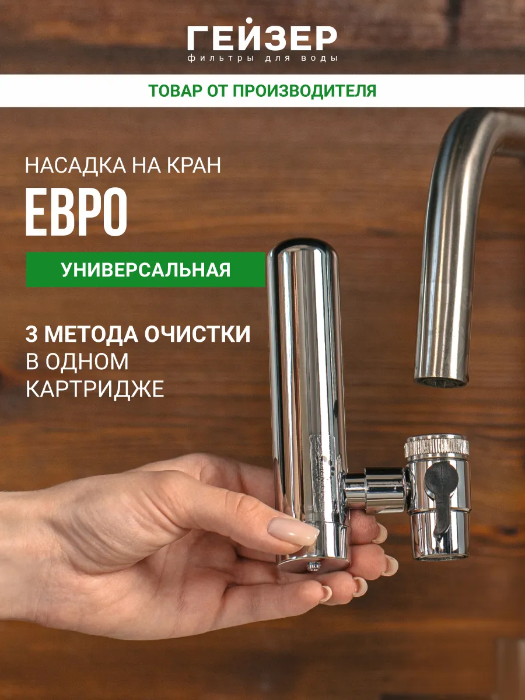

Гейзер Евро, арт. 61005
На оба крана
3000 л
0,5 л/мин
4–40 °C
0,22 кг
Переключатель накручивается вместо аэратора, цилиндр с картриджем стоит рядом с изливом. Картридж «Арагон» по описанию производителя удаляет хлор, железо, тяжёлые металлы, органику и микроорганизмы. В комплекте переходник 22 мм и ключ для аэратора. На фото производителя насадка стоит рядом с таким же высоким изливом, как у вас на кухне; поместится ли цилиндр рядом с рычагом низкого крана в ванной, без примерки сказать нельзя.
- Wildberries, арт. 171586872 2 220 ₽ Без WB Кошелька 2 266 ₽. Пометка «Оригинал», оценка 4,9 при 42 отзывах. 5 октября обещали доставку послезавтра, то есть 7 октября.
- Ozon 2 297 ₽ Бренд проверен, оценка 4,6 при 40 отзывах, доставка 11 октября.
Фото: карточка производителя на Wildberries.